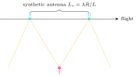

Construction
A target T is in the beam while the antenna travels from A to B, a distance equal to the real beam footprint : this is the synthetic antenna. During that time its range varies quadratically and the echo phase gives a Doppler history (a chirp in azimuth) unique to the target's along-track position. Correlating with the expected history (azimuth compression, the azimuth analogue of pulse compression) focuses the target. A synthetic antenna of length  with two-way phase has beamwidth , so
with two-way phase has beamwidth , so
Picture

T is seen from every antenna position between A and B.
Consequences
- resolution independent of range: the farther the target, the longer the synthetic antenna;
- smaller antennas give finer resolution, but need higher pulse repetition frequency and give narrower swaths (ambiguity constraints);
- both amplitude and phase must be recorded: the product is a complex image;
- modes: stripmap, spotlight (beam steered to stay on a target: longer , finer resolution), ScanSAR/TOPS (bursts across sub-swaths: wide swath, coarser resolution).
Intuition
Instead of one huge antenna, take many snapshots with a small one while moving, and add them up as if they had been taken at once.
Pitfall
Coherent focusing assumes a still scene: moving targets (ships, cars) are displaced in azimuth or blurred ("train off the tracks").